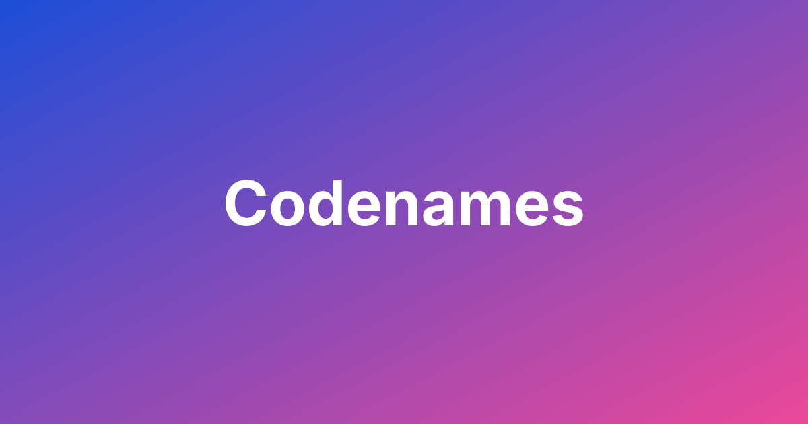

Back to all games
Codenames

A word-association party game where two teams compete to identify all of their team's secret agents before the other team does.
Setup
- Divide into Teams: Split players into two teams (Red and Blue).
- Choose Spymasters: Each team selects one player to be their Spymaster.
- Lay Out Codenames: Place 25 word cards in a 5x5 grid.
- Choose a Key Card: Spymasters randomly choose a key card, which shows the secret identities of the words.
Gameplay
- Spymaster Gives a Clue: The Spymaster gives a one-word clue and a number (e.g., "Animals 3").
- Field Operatives Guess: The team guesses words they think relate to the clue.
- If they guess correctly, they can guess again.
- If they guess a word for the other team, their turn ends.
- If they guess the assassin, their team loses immediately.
Winning the Game
The first team to identify all of their agents wins.
Strategy Tips
- Spymaster: avoid the assassin first: Before every clue, check it doesn't point toward the assassin. A risky big clue isn't worth instant loss.
- Two or three is plenty: Solid 2- and 3-word clues win more games than shaky 4-word ones. The team can use extra guesses on earlier clues.
- Use the extra guess: You can guess one more than the number. Use it to catch up on words from a previous clue.
- Think about the opponent's words: Clues that also hint at enemy agents give them free turns. Check every word on the board, not just your own.
- Operatives: talk it out: Discuss aloud before touching a card. Start with the strongest link and stop when unsure.
- Watch the spymaster's earlier clues: Unused words from old clues are still out there. Go back for them when the current clue is done.
- Stop while ahead: When guesses feel shaky, end the turn. Hitting a neutral is fine; hitting the assassin or the opponent's agent isn't.